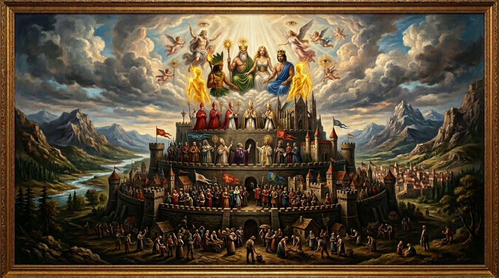
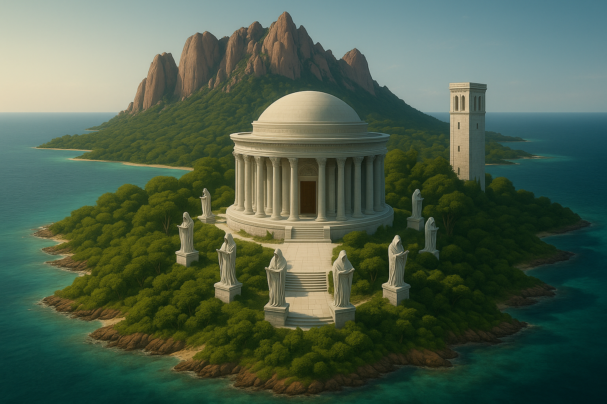
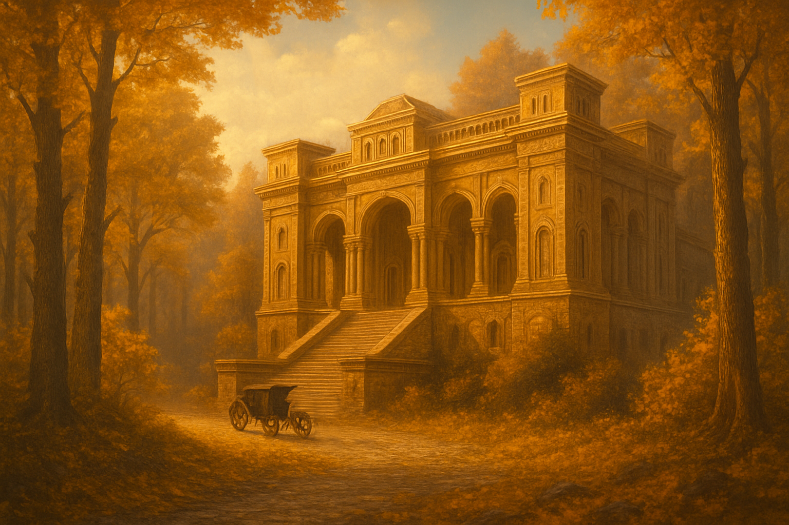
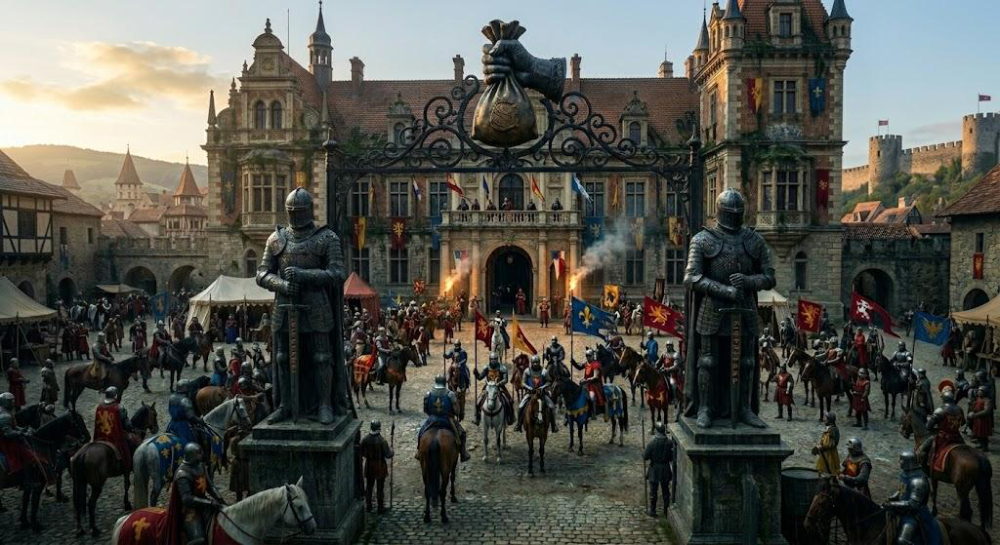

Tudo o que precisamos saber sobre as estruturas institucionais de peso e poder em Walingardyn. Reinos também precisam de olhos que os observem de cima, por essa ótica, conspirações acontecem por motivos que podem ser corretos e até benéficos.

Conselho de Esguardian. A igreja. O poder moderador acima das coroas. Esguardian foi fundada na primeira Era Imperial por seis monges estudiosos e herméticos, que precisavam de um lugar seguro para praticar os conhecimentos daquilo que acreditavam ser a crença real do pós vida,rabiscos teóricos de uma religião ainda desconhecida por muitos, lançada ao vento por homem estranho de Mavul, pouco antes de desaparecer.
As palavras do homem, Alkarij Munnyr, foram preservadas em sete pergaminhos que de algum modo chegaram as mãos dos monges. A suspeita de muitos lordes que estudaram sobre o caso,era de que o estudioso de pergaminhos, Cahatsh Balmusell, que havia vivido com Munnyr e aprendido tudo o que podia sobre ele, declarando em seu manuscrito único: O véu entre deuses e homens, de algum modo os roubou dos discipulos do deus e levou-os até os monges esguardianos.

Sua construção se deu em 212 da Era de ouro. A necessidade bateu a porta, quando as monarquias pareciam entrar em declinio. Reis começaram adecaptar lordes por meras menções de traição, ou de conspirações, alegações que quase sempre se provavam mentirosas, movidas por interesses ocultos, ou rinchas com as vitimas. Um grupo de lordes revoltados com os assassinatos que já somavam centenas; devidiram tomar precauções contra isso e juntos fundaram o parlamento de Linowland. Após isso, conflitos aconteceram entre o novo pequeno estado e os reinos, que acabaram por perder parte de seu território na "batalha do forte clowper", (um forte do reino, tomado em rebelião), desde então, Linowland é uma das terras conhecidas como: cidades livres de Triohnte. E os reinos não conseguem derrubar o dominio dos poderes que lá estão fixados.

Sua construção se deu em 212 da Era de ouro. A necessidade bateu a porta, quando as monarquias pareciam entrar em declinio. Reis começaram adecaptar lordes por meras menções de traição, ou de conspirações, alegações que quase sempre se provavam mentirosas, movidas por interesses ocultos, ou rinchas com as vitimas. Um grupo de lordes revoltados com os assassinatos que já somavam centenas; devidiram tomar precauções contra isso e juntos fundaram o parlamento de Linowland. Após isso, conflitos aconteceram entre o novo pequeno estado e os reinos, que acabaram por perder parte de seu território na "batalha do forte clowper", (um forte do reino, tomado em rebelião), desde então, Linowland é uma das terras conhecidas como: cidades livres de Triohnte. E os reinos não conseguem derrubar o dominio dos poderes que lá estão fixados.